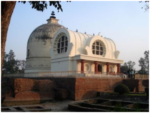
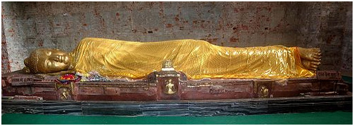

KUSHINAGAR TOUR


Kushinagar (Hindi: कुशीनगर, Urdu: کُشی نگر), District Of The Eastern Uttar Pradesh, Is Known For Its Cultural Heritage All Over The World. It Is One Of The Four Holiest Places For The Buddhists. At Kushinagar, Great Lord Buddha, Founder Of Buddhism, Delivered His Last Sermon.
Overview :
School & College PicnicsKushinagar (Hindi: कुशीनगर, Urdu: کُشی نگر), District Of The Eastern Uttar Pradesh, Is Known For Its Cultural Heritage All Over The World. It Is One Of The Four Holiest Places For The Buddhists. At Kushinagar, Great Lord Buddha, Founder Of Buddhism, Delivered His Last Sermon. Outside India, It Is An International Buddhist Pilgrimage Centre. The Followers Of The Buddhism, Especially From Asian Countries, Wish To Visit This Place At Least Once In Their Lifetime.
DemographicsAs of 2001 India census,Kushinagar had a population of 17,982. Males constitute 52% of the population and females 48%. Kushinagar has an average literacy rate of 62%, higher than the national average of 59.5%: male literacy is 70%, and female literacy is 54%. In Kushinagar, 15% of the population is under 6 years of age.It is 20km (south) away from Padrauna, 55km (east) from Gorakhpur, and 35km (north) from deoria.
Ancient historyIn ancient times, it was known as Kushavati (Jatakas). It finds mention in epic Ramayan as the city of Kusha the son of Ram, the famous king of Ayodhya. Kushinagar was a celebrated center of the Malla kingdom of ancient India. Later, it would be known as Kushinara, one of the most important four holy sites for Buddhists. At this location, near the Hiranyavati River, Gautama Buddhaattained Parinirvana (or 'Final Nirvana') after falling ill from eating a meal of a species of mushroom, or possibly pork.
Many of the ruined stupas and viharas here date back to 3rd century BCE - 5th century CE when prosperity was at its peak. TheMauryan emperor Ashoka is known to have contributed to significant construction at this site.
Prior to its rediscovery in the 19th century, there was a silence of more than half a millennium at Kasia. Due to violent invasions, Kushinagar lost its vitality and eventually was neglected.

Kushinagar The remains of the Parinirvana Stupa and Parinirvana Temple, when rediscovered, were covered in a 40 foot high mound of bricks surrounded by a dense thorny forest. After E. Buchanan, an officer of the East India Company, arrived in Kasia in the course of his survey-work, H. H. Wilson, in 1854, made the suggestion that ancient Kushinagar and Kasia were the same. Work resumed around 1861–1862 when Alexander Cunningham, the founder of the Archaeological Survey of India suggested the site to be that of Gautama Buddha's decease. A British officer named Mr. A. C. L. Carlleyle followed suit. Excavations began in the early twentieth century under J. Ph. Vogel.[2] He conducted archaeological campaigns in 1904-5, 1905-6 and 1906-7, uncovering a wealth of Buddhist materials. Although no decisive evidence was found to prove Cunningham’s supposition that the site known at Māthā kūār kā Koṭ was Kushinārā, a series of monastic seals with the Sanskrit legend mahāparinirvāne cāturdiśo bhikṣusaṃghaḥ were taken to show that by the late Gupta period the site was understood to be that of the Buddha's final passing.
Kesherwani Travels Gorakhpur,Travel agent in Kushinagar,Tour operators in Kushinagar,Travel agency in Kushinagar,Bus Hire in Kushinagar,Bus Service in Kushinagar,Kushinagar Airport kesherwanitravels.com
Visits By The Buddha To Kushinagar :
At the time of the Buddha, Kushinagar was the capital of the Mallas, and the scene of the Buddha's death. It was twenty-fiveyojanas from Rajagaha (DA.ii.609; acc. to Fa Hsien, p. 40, it was twenty-four yojanas from Kapilavatthu) and lay on the high road from Alaka to Rájagaha, the road taken by Bávarí's disciples (SN.v.1012). At that time it was a small city, "a branch-township with wattle-and-daub houses in the midst of the jungle," and Ananda was, at first, disappointed that the Buddha should have chosen it for his Parinibbana. But the Buddha, by preaching the Maha-Sudassana Sutta, pointed out to him that in ancient times it had beenKusavati, the royal city of Maha-Sudassana (D.ii.146).
It is said that the Buddha had three reasons for coming to Kusinárá to die:
- Because it was the proper venue for the preaching of the Mahá-Sudassana Sutta;
- Because Subhadda would visit him there and, after listening to his sermon, would develop meditation and become an arahant while the Buddha was still alive; and
- Because the brahman Doha would be there, after the Buddha's death, to solve the problem of the distribution of his relics (UdA.402f; DA.ii.573f6).
Between Kusinara and Pava, three gavutas (c. 15 km (9.3 mi)) away (DA.ii.573) - from where the Buddha came to Kusinára on his last journey from Rajagaha, stopping at various places - lay the stream of Kakuttha on the banks of which was the Ambavana; beyond that was the Hiraññavati river, and near the city, in a south-westerly direction, lay the Upavattana, the Sala-grove of the Mallas, which the Buddha made his last resting-place (UdA.238; DA.ii.572f).
After the Buddha's death his body was carried into the city by the southern gate and out of the city by the eastern gate; to the east of the city was Makutabandhana, the shrine of the Mallas, and there the body was cremated. For seven days those assembled at the ceremony held a festival in honour of the relics (D.ii.160f).
As the scene of his death, Kusinara became one of the four holy places declared by the Buddha (in the Mahaparinibbana Sutta (ii. 140) ) to be fit places of pilgrimage for the pious, the other three being Kapilavatthu (near Lumbini), Buddhagaya (Bodh Gaya), and Isipatana (Sarnath) (D.ii.140).
Mention is made of other visits paid to Kusinárá by the Buddha, prior to that when his death took place. Thus, once he went there from Ápana and having spent some time at Kusinárá, proceeded to Átumá. The Mallas of Kusinárá were always great admirers of the Buddha, even though not all of them were his followers, and on the occasion of this visit they decided that any inhabitant of Kusinárá who failed to go and meet the Buddha and escort him to the city, would be fined five hundred. It was on this occasion that Roja the Mallan was converted and gave to the Buddha and the monks a supply of green vegetables and pastries (Vin.i.247f). During some of these visits the Buddha stayed in a wood called Baliharana, and there he preached two of the Kusinárá Suttas (A.i.274f; v.79f) and the "Kinti" Sutta (M.ii.238f). A third Kusinárá Sutta he preached while staying at Upavattana. (A.ii.79; for another discourse to some noisy monks at Upavattana, see Ud.iv.2).
According to a late tradition, one-eighth of the Buddha's relics were deposited in a cairn in Kusinárá and honoured by the Mallas (D.ii.167; Bu.xxviii.3).
In Hiouen Thsang's day there still existed towers and Sarighárámas erected to mark the spots connected with the Buddha's last days and obsequies at Kusinárá. According to his account (Beal. op. cit.li. lii. n) Kusinárá was nineteen yojanas from Vesáli. A copper plate belonging to the thúpa erected at the site of the Buddha's death has recently been discovered (CAGI.i.714). 